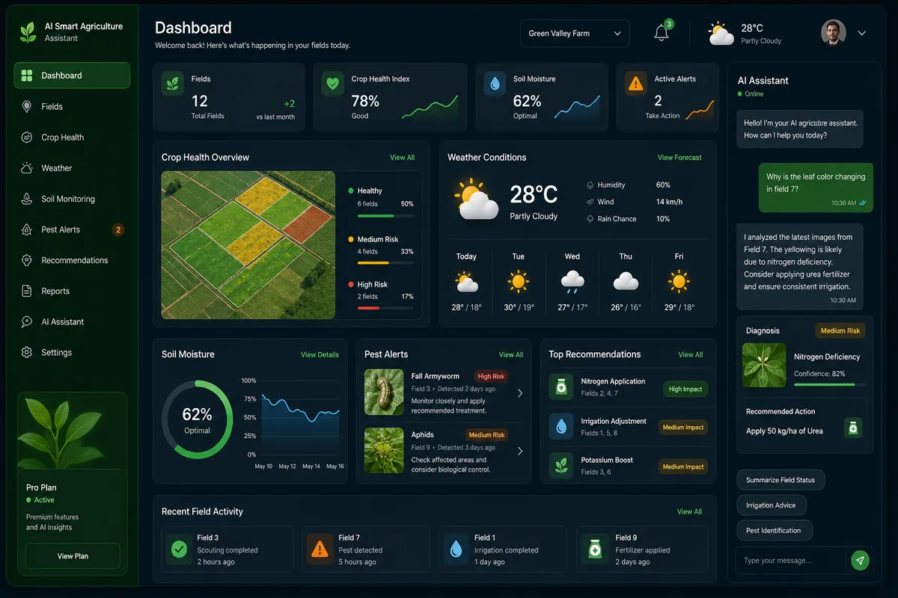

AI Smart Agriculture Assistant
A production-deployed, three-tier agriculture platform with an NLP assistant for crop diagnostics, weather-adaptive recommendations, pest-management guidance, and real-time decision support.

Python
Flask
MySQL
REST APIs
JavaScript
Render